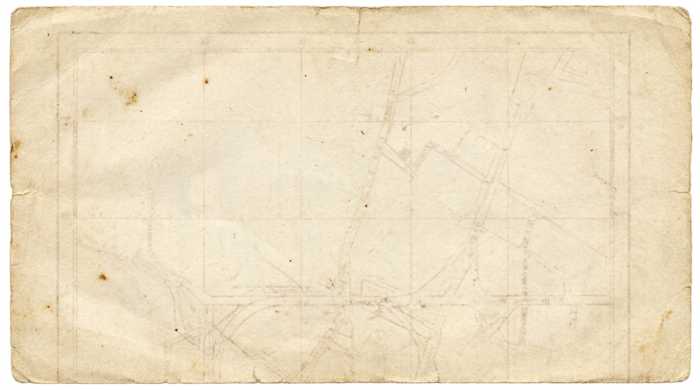

No two stations on this map are really where the diagram puts them. Six hub points and one elbow-routing rule generate every line, every 45° jog, every interchange — the aged paper underneath is the only thing that was drawn by someone else.